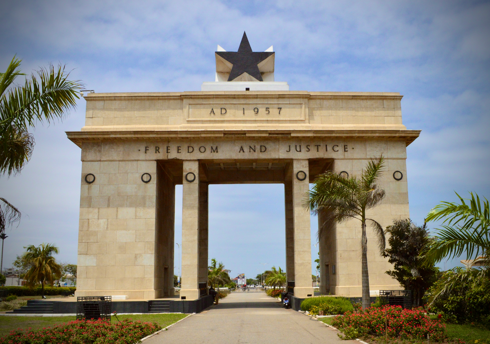

About Me - Michael MJ N. A.

Professional Background
I’m an IT System Administrator at Hypoport Hub SE, and I’m usually the person who makes sure your laptop works, your login behaves,
and your IT problems disappear, sometimes suspiciously fast
I enjoy building and maintaining systems that just work. My day‑to‑day work revolves around keeping IT
operations running smoothly, supporting colleagues through their daily tech adventures, and making sure
onboarding, hardware, and software don’t turn into a mystery novel. My approach is simple: practical,
structured, and user‑friendly solutions, without unnecessary drama.
What really motivates me is working in a collaborative environment where IT isn’t a blocker but an enabler. I
like fixing problems before they get annoying, improving processes along the way, and being part of teams
that believe technology should support people — not slow them down. At Hypoport Hub SE, that mindset
isn’t just a slogan; it’s how we work every day.
If you enjoy smart tech, good teamwork, and IT with a human touch, chances are we’ll get along just fine. 🚀💻
My Career Goal
Achieving all that is POSSIBLE to be achieved
This goal drives how I work, learn, and grow. Professionally and academically,
I focus on continuous improvement, always learning, always pushing boundaries, and always aiming to deliver work I can stand
behind with confidence.
A Bit About My Background
I was born on 18 November 1998 in Kumasi, Ghana, in the West African region.
I am currently single.
My background reflects a mix of cultures, environments, and experiences, something that has shaped how I approach teamwork, communication, and problem‑solving.
Educational Background
- University of Lübeck, Germany — until March 2021
- Stadtteilschule Stellingen, Hamburg, Germany — 2015 – June 2020
- Stadtteilschule Langenhorn, Hamburg, Germany — April 2014 – June 2015
- Pentecost Preparatory School, Kumasi, Ghana — 2010 – March 2014
- Royal Count of Kumasi International School, Kumasi, Ghana — 2004 – March 2010
Awards & Recognition Philosophy 🏆
While my journey is still unfolding, I approach my work with a clear mindset: continuous growth and striving for excellence.
Recognition, for me, isn’t just about titles or awards. It’s about consistently raising the bar, learning from
every experience, improving step by step, and delivering work I can truly stand behind. And if awards happen
along the way? Even better. I’ll happily make room for them on the shelf.
Academic Achievements🎓
- Stellinger Grammy - 2016
- Stellinger Grammy - 2017
- Students' Choice Award - 2019
Professional Achievements💼
Other Achievements
Professional Experience
Work Experience
- System Administrator, Hypoport Hub SE — January 2025 – Present
- Junior IT Specialist, Julie & Grace GmbH — January 2021 – December 2024
- IT Support Intern, Stadtteilschule Stellingen — January 2019 – October 2020
- IT Support & Apple Specialist, Macro Computersystems GmbH — April 2019 – June 2020
- Creative Assistant & Location Support, Astor Film Lounge — November 2018 – March 2019
- Emergency IT Support, Diggidoc Computer Solutions — October 2018 – January 2019
Internships
- Avendung Ingenieurgesellschaft mbH — February 2020 – March 2020
- eSailors IT Solution GmbH — August 2018 – September 2018
- Dreamlines GmbH — June 2016 – May 2017
Volunteering & Community Work
- Volunteer Counsellor & Mentor
St. Petri Beratung und Seelsorge Zentrum Hamburg — April 2026 – Present
- Volunteer IT Support
Hamburg Ghana Adventist Church — January 2016 – December 2019
- Nominated Church Assistant / Church Secretary
Hamburg Ghana Adventist Church — February 2016 – March 2017
Skills
Technical Skills
- IT System Administration
- VoIP Administration & Management
- Network Support
- Hardware & Software Troubleshooting
- Cybersecurity & Password Fundamentals
- Cloud Computing Basics
- Operating System Fundamentals (macOS & Windows)
Programming & Technical Languages
- HTML & CSS
- JavaScript
- Python
- AI Prompting
Soft Skills
- Communication
- Leadership
- Teamwork
- Problem-Solving
- Adaptability
- Time Management
Languages 🌍
Ranked by fluency (Easter egg included — numbers indicate proficiency inspired by JLPT):
- Akan (Asante Twi)
- English (Australian & British English)
- German (High German)
- French (Togolese French) | Spanish (European Spanish)
- Japanese